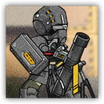
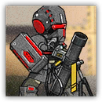

游击队迫击炮兵 Guerrilla Mortar
远程 物理；精英 萨卡兹

|  |
爱国者的精锐压制战士。擅长远距离炮击。因为佩戴中型护甲而行动缓慢，但防御能力也有所提升。收到战术命令后状态会得到大幅提升，攻击速度大增。 |
游击队迫击炮兵丨Guerrilla Mortar
中型类人（任意），守序中立
| AC 17 | 先攻 +4（14） |
| HP 60（8d8+24） | |
| 速度 30 尺 | |
| 调整 | 豁免 | 调整 | 豁免 | 调整 | 豁免 | |||||||||
|---|---|---|---|---|---|---|---|---|---|---|---|---|---|---|
| 力量 | 11 | +0 | +0 | 敏捷 | 19 | +4 | +6 | 体质 | 16 | +3 | +3 | |||
| 智力 | 12 | +1 | +1 | 感知 | 13 | +1 | +3 | 魅力 | 8 | -1 | -1 |
| 技能 求生+3，察觉+3 |
| 感官 黑暗视觉60尺，被动察觉13 |
| 语言 通用语，乌萨斯语，萨卡兹语 |
| CR 4（XP 1,100；PB +2） |
动作 Actions
迫击轰炸 Mortar Bombardment。远程攻击检定：+6（若持有临时生命值则有优势），射程300/600尺。命中：21（6d6）火焰伤害，且目标周围5尺的每个其他敌人受到10点火焰伤害。
游击队迫击炮兵组长 Guerrilla Mortar Leader
近战 物理；精英 萨卡兹
|  |
爱国者精锐压制战士中的菁英。相比普通迫击炮兵，装备的炮弹破坏力更强，相应的处境也更危险。收到战术命令后状态会得到大幅提升，攻击速度大增。 |
游击队迫击炮兵组长丨Guerrilla Mortar Leader
中型类人（任意），混乱中立
| AC 17 | 先攻 +5（15） |
| HP 75（10d8+30） | |
| 速度 30 尺 | |
| 调整 | 豁免 | 调整 | 豁免 | 调整 | 豁免 | |||||||||
|---|---|---|---|---|---|---|---|---|---|---|---|---|---|---|
| 力量 | 12 | +1 | +1 | 敏捷 | 20 | +5 | +8 | 体质 | 17 | +3 | +3 | |||
| 智力 | 14 | +2 | +2 | 感知 | 13 | +1 | +4 | 魅力 | 11 | +0 | +0 |
| 技能 调查+5，察觉+3，求生+3 |
| 感官 黑暗视觉60尺，被动察觉13 |
| 语言 通用语，乌萨斯语，萨卡兹语 |
| CR 6（XP 2,300；PB +3） |
动作 Actions
迫击轰炸 Mortar Bombardment。远程攻击检定：+8（若持有临时生命值则有优势），射程300/600尺。命中：28（8d6）火焰伤害，且目标周围5尺的每个其他敌人受到14点火焰伤害。
反应 Reactions
压制轰炸 Suppression Bombing。触发：一个迫击炮兵组长在其上个回合曾伤害过的生物主动移动了5尺。响应：迫击炮兵立即对其发动一次迫击轰炸攻击。